I'm Naga Spurthi Acharam — an MS Forestry researcher at Auburn University, studying how biochar shapes the growth and crown architecture of Japanese maples, and the genomic basis of crown form in oaks.
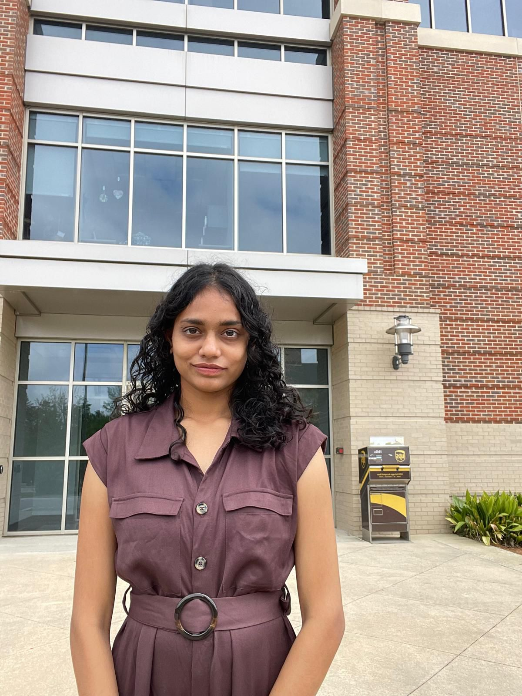
I'm an MS Forestry student at Auburn University, working as a Graduate Research Assistant in the College of Forestry, Wildlife & Environment under Dr. Georgios Arseniou and Dr. Hao Chen. Before Auburn, I trained in horticulture in India, graduating as Salutatorian from SKLTSHU in 2024.
What I love most is sitting at the meeting point of fieldwork and computation — running a nursery experiment by morning and a bioinformatics pipeline by afternoon. The thread that ties my projects together is tree architecture: how trees take shape, and what controls it.
Teaching keeps me grounded too. I co-lead grafting workshops, mentor undergraduates at Crooked Oaks Farm, and run TLS demos for Alabama high-schoolers.
A randomized complete block design (n = 120) using two Acer palmatum cultivars and sugarcane bagasse biochar at 20 % v/v. Quarterly TLS scans + monthly growth measurements reveal cultivar-specific responses in stem diameter and crown structure.
Genome-wide identification of the LATERAL ORGAN BOUNDARIES DOMAIN family in Quercus rubra (44 genes) and Q. suber (37 genes). Phylogenetics, motif and cis-element analysis, synteny, and tissue-specific expression — testing how LBD divergence underwrites contrasting crown forms.
TA for FORY 3180 Forest Resource Sampling. Designed and led a grafting workshop for 18+ participants at Crooked Oaks Farm. Demonstrated TLS to Alabama high-school students at GIS Day. Publicity Officer for the Indian Student Association.
Terrestrial Laser Scanning (FARO Focus Premium), point-cloud processing (FARO SCENE, CloudCompare), QSM modeling (TreeQSM), box dimension and path fraction analysis, tree architecture quantification.
Genome-wide gene family identification (BLAST, HMMER), phylogenetic analysis (MEGA), conserved motif and domain analysis (MEME, NCBI CDD), cis-regulatory element analysis (PlantCARE), synteny analysis, RNA-seq pipeline analysis, tissue-specific expression analysis.
R, MATLAB, Linux/Ubuntu, statistical modeling, data visualization, scientific figure preparation.
Experimental design (RCBD), nursery-based research, biomass and leaf area estimation (LI-3100C), grafting, scientific outreach and teaching.
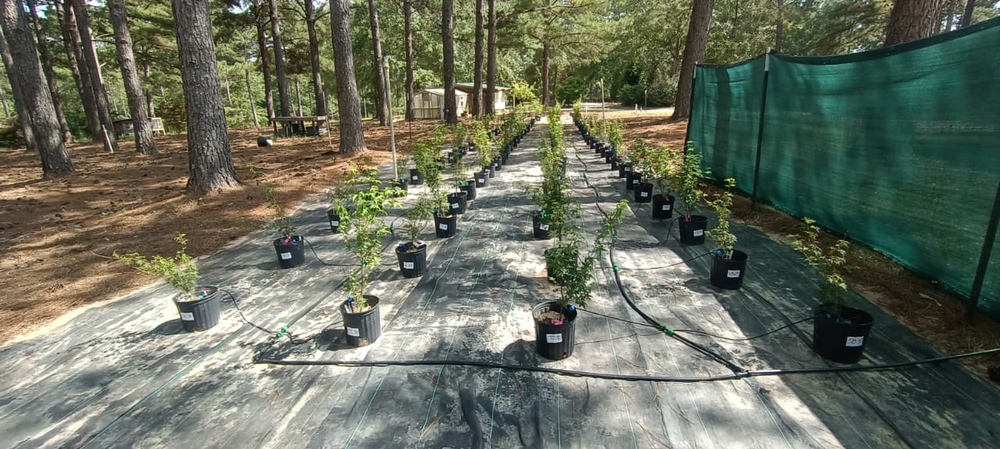
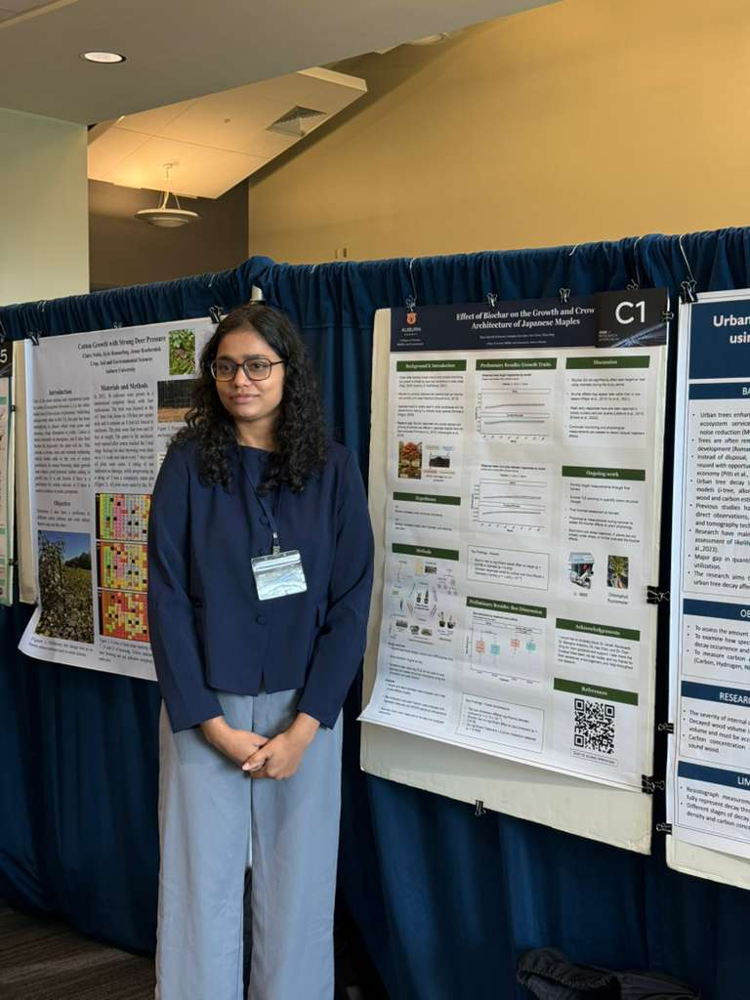
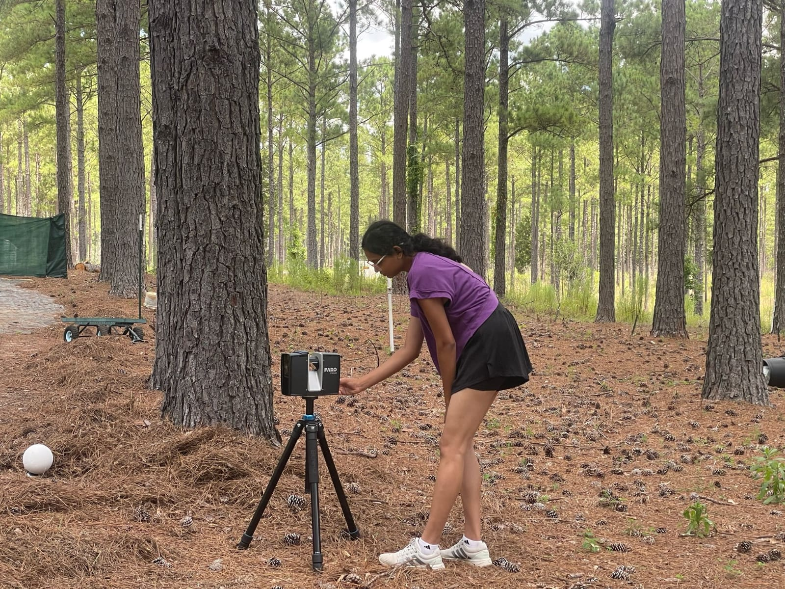
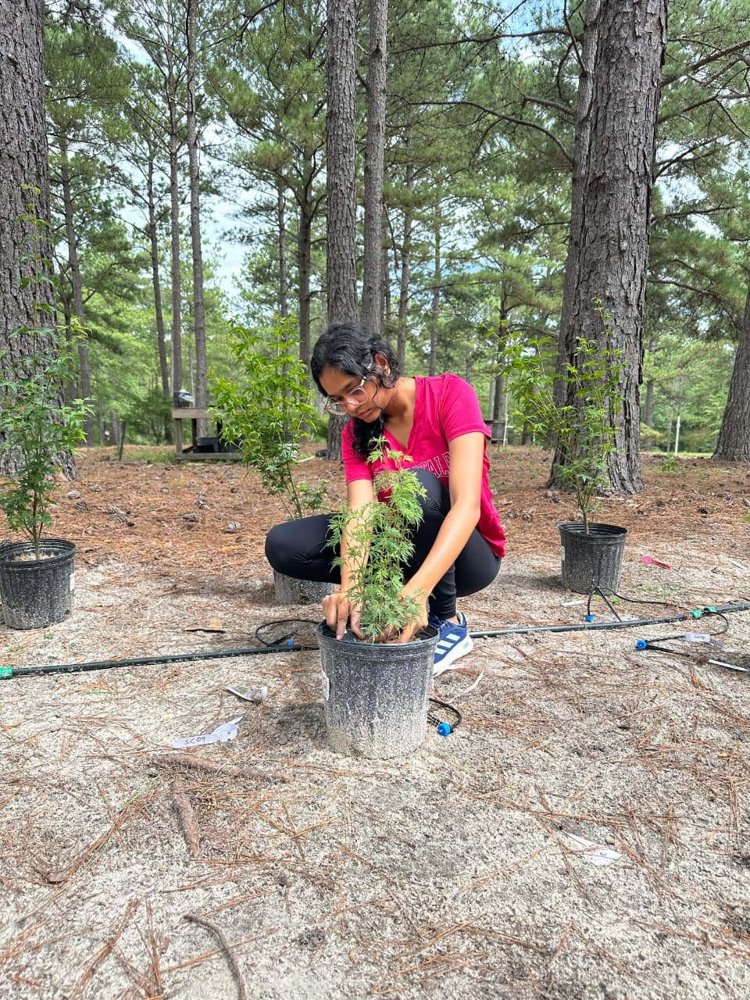
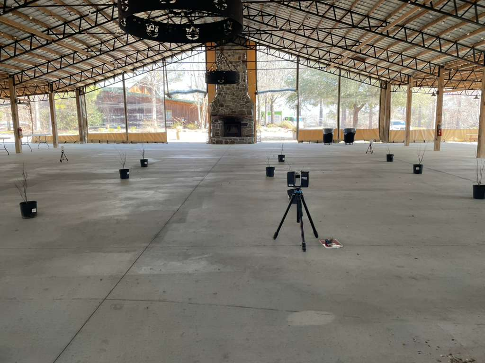
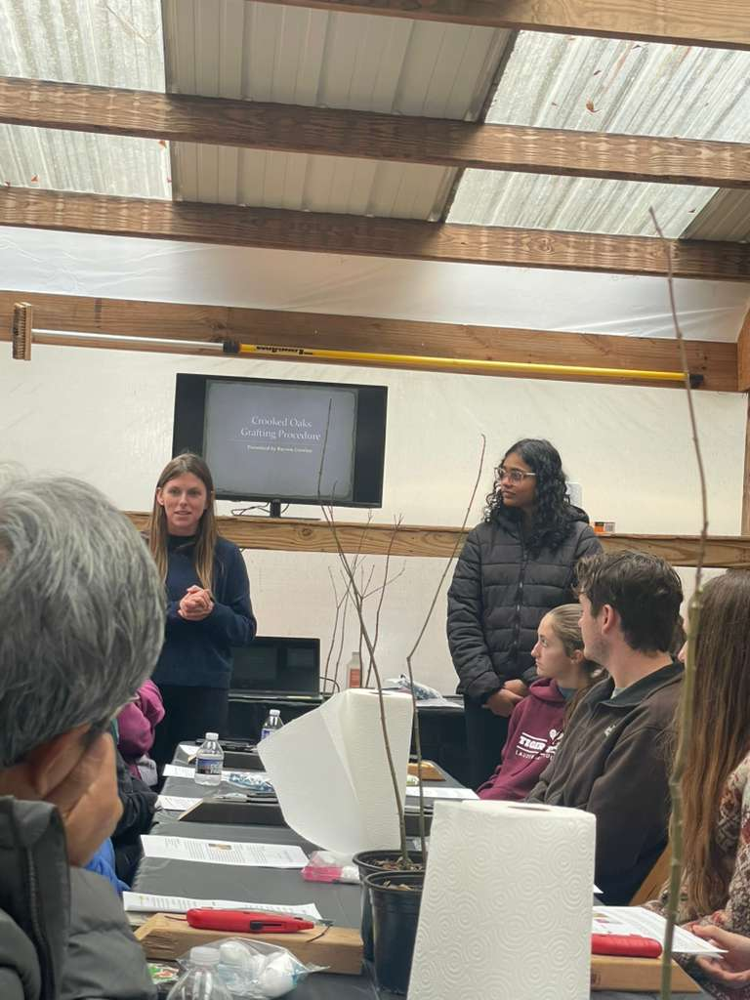
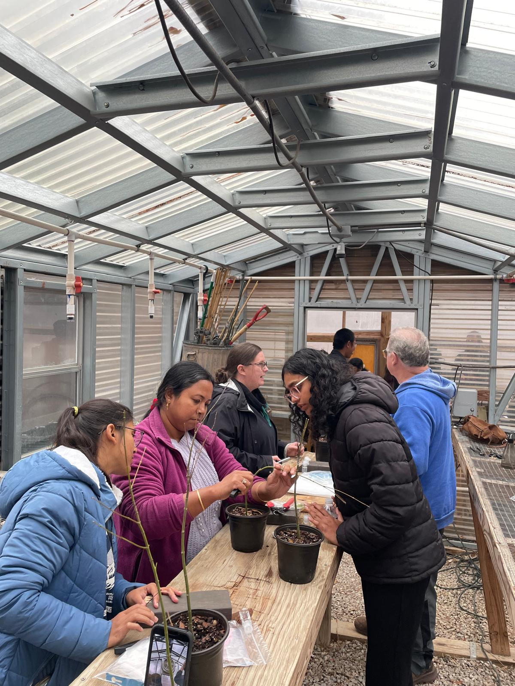
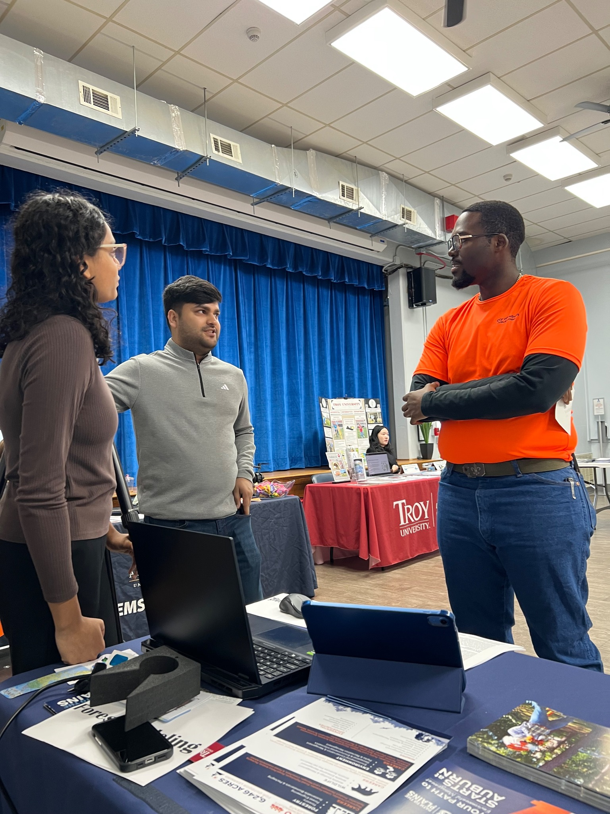
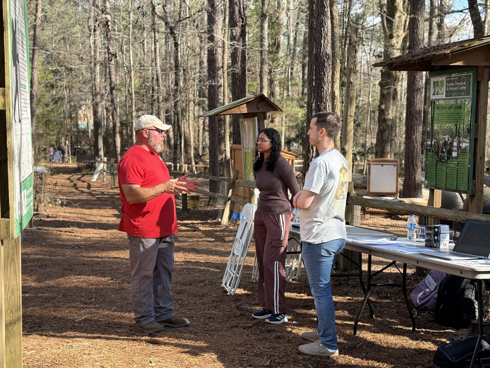
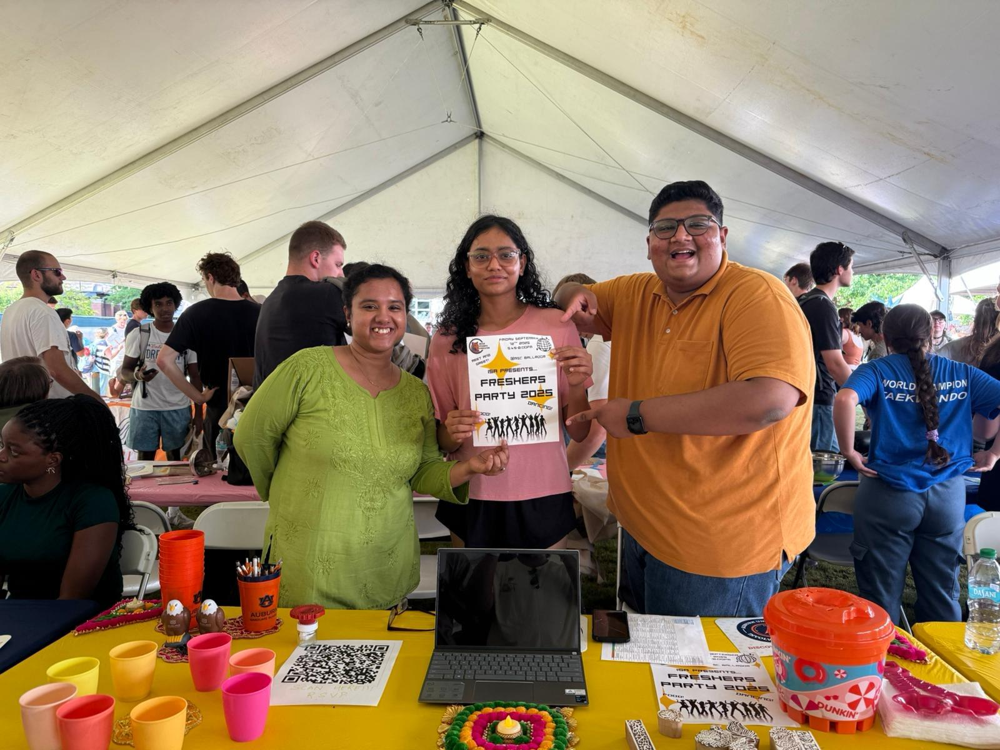
Designing and running biochar architecture trials on Japanese maples; quarterly TLS scans + processing in FARO SCENE / CloudCompare / TreeQSM; genome-wide LBD analysis in Quercus.
Conducted field labs in forest inventory; supported sampling, measurement techniques, data processing, grading.
Designed and led a full grafting workshop on Japanese maple seedlings — presentations, live demos, instructional handouts, hands-on training for 18+ participants across multiple Auburn agricultural groups.
Series 1: Basics of Bioinformatics — pipelines, sequence analysis, and computational workflows.
Foundation in plant science, propagation, soil management, plant biotechnology. Trained in grafting, drone assembly, mushroom cultivation, ikebana & bonsai.